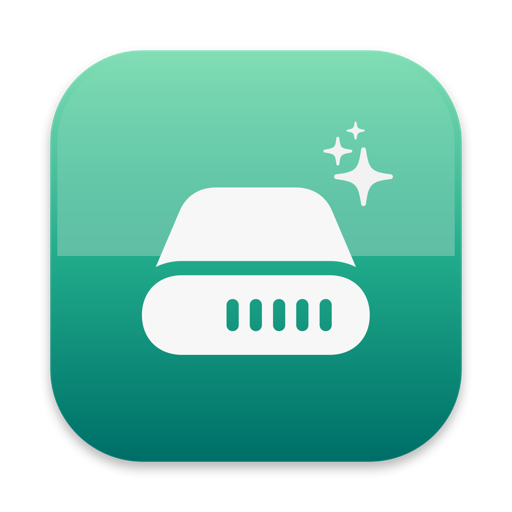

Cleanium lives in your Mac's menu bar and finds the gigabytes hiding in caches, build folders, and AI model stores — then explains each one in plain English: what it is, how risky it is, and how to get it back.
Download for MacHow it works
Cleanium walks the folders you choose against 29 built-in rules for caches, build leftovers, AI model stores, and stale downloads. Pause anytime and act on what's already been found.
Full path, plain-English description, a risk grade from A (comes back by itself) to D (your files — check first), and the exact way to get it back.
Everything goes to the Trash, so nothing is gone until you empty it. Permanent delete is a separate, explicit choice for items over 2 GB.
Why Cleanium
Other cleaners show a number and a checkbox. Cleanium tells you what each folder is and what deleting it costs — then you decide.
Unknown large folders can be explained by your locally installed claude, codex, or gemini CLI. No API keys; Cleanium itself never touches the network.
When you delete something the AI classified, Cleanium offers to remember the rule. Nothing is saved without your approval — you're asked every time.
node_modules, DerivedData, cargo and gradle caches, simulator images, Ollama and Hugging Face models — the multi-gigabyte stuff generic cleaners walk past.
Pure Swift and SwiftUI, no third-party packages, MIT licensed. Read every line before you trust it with your disk.
Every scan shows its token usage — input, cached, output — and folders are batched so you pay the CLI's overhead once, not per folder.
Install
Unzip, drag Cleanium.app to Applications, then right-click → Open the first time. Cleanium is ad-hoc signed, not notarized, so macOS asks for that one explicit approval.
It then lives in your menu bar — no Dock icon, no windows until you ask.